Step by step: from copying the files to the radio to checking the controls and the first F5J flight. The example is the M-tail template: the rudder on CH6 and an elevator in two halves, each with its own servo (CH7 and CH8).
Soar EdgeTX BW brings the SoarOTX soaring scripts by Jesper Frickmann to EdgeTX radios with a 128×64 black-and-white screen. For F5J it has two parts. The timer screen runs the flight: motor run, glide, landing, start height, the voice countdown of the working time and the score log. The Configuration menu lets you set up the model right on the radio, without a computer. The model template provides the flight modes, timers, logical switches, global variables, curves, mixes and channels, and the scripts read and change them.
Alt sensor) for the start height.Cels, RxBt, A1 or A2) for the low battery warning.bw128x64.zip: the Pocket and the GX12 both have a 128×64 screen.edgetx-sdcard-sounds-en-2.12.3.zip for English. Without it the radio does not speak numbers: time, altitude and voltage.dist/SDCARD folder is not a clean SD card: it also holds models, radio settings and other files from the author's radio. Copy from it only the four items listed in section 2.MODELS and RADIO folders.bw128x64.zip and the voice pack to the root of the card and agree to replace the files. Your models and the files you added yourself stay.dist/SDCARD:
| What (from dist/SDCARD) | Where on the card | What for |
|---|---|---|
SCRIPTS/TELEMETRY (the whole folder) | /SCRIPTS/TELEMETRY | the timer screen and the Configuration menu |
SCRIPTS/FUNCTIONS/JFutil.lua | /SCRIPTS/FUNCTIONS | shared functions that the scripts load |
TEMPLATES/3.SoarEdgeTx/*.yml | /BACKUP | the model templates; section 3 restores one of them as a model |
SOUNDS/en/*.wav | /SOUNDS/en | the template's voice prompts: flight modes, launch, landing, motor off and others |
MODELS), radio settings (RADIO), firmware and other files from the author's radio. Copied to your card, they replace your models and settings.JFXJcf.luac and JF5Jsk.luac in /SCRIPTS/TELEMETRY, and ARMED.luac, JFutil.luac and MENU.luac in /SCRIPTS/TELEMETRY/128x64. EdgeTX runs a .luac file instead of its .lua unless the .lua is newer, so the old files keep the old menu (without 7. Motor idle) or stop the screens from opening./SOUNDS/en. Copy the same .wav files into the folder of your radio's voice language too, for example /SOUNDS/de, or they may not play.On black-and-white radios EdgeTX has no template list for new models. The template is restored like a model backup from the /BACKUP folder.
pocket-F5J-MTail for the Pocket, gx12-F5J-MTail for the GX12. The two differ only in the model name and the switches (section 5).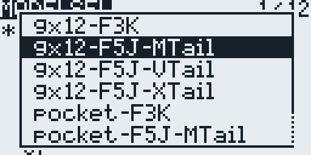
/BACKUP.ExpressLRS RX network with the password expresslrs. Connect to it and open 10.0.0.1. More at expresslrs.org.elrs.lua script and put it in /SCRIPTS/TOOLS. It is not tied to a firmware version. Delete the old elrsV3.lua and elrsV3.luac if they are there.| Channel | Name in the model | What to connect |
|---|---|---|
| CH1 | Ai-L | left aileron |
| CH2 | Ai-R | right aileron |
| CH3 | Moto | motor controller (ESC) |
| CH4 | Fl-L | left flap |
| CH5 | Fl-R | right flap |
| CH6 | Rudd | rudder |
| CH7 | Ele-L | left elevator half |
| CH8 | Ele-R | right elevator half |
The wing and the motor are wired the same way in all F5J templates; only the tail differs. This guide describes the M-tail, and the Configuration pages work the same way with the other tails:
| Channel | V-tail (*-F5J-VTail) | X-tail (*-F5J-XTail) |
|---|---|---|
| CH6 | unused | rudder (Rudd) |
| CH7 | left V-tail surface (Vt-L) | elevator (Elev) |
| CH8 | right V-tail surface (Vt-R) | unused |
The template is neutral: centers, travels and reverses are not fitted to any particular glider; that is done in section 6. The alignment curves CV1–CV4 start linear. With the brakes off, the template puts the ailerons (CH1/CH2) at about ±37 % and the flaps (CH4/CH5) at ±67 %, so most of the flap travel stays for the brakes. The positions for normal flight are set with the last point of the airbrake curves (step 6.3).
The template has two telemetry screens. Screen 1 is the F5J timer, screen 2 is the Configuration menu with eight pages. TELE opens the screens, PAGE> and PAGE< switch between them.
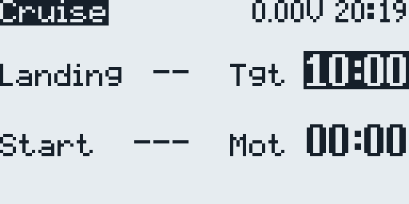
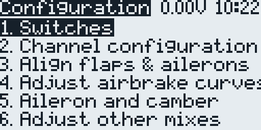
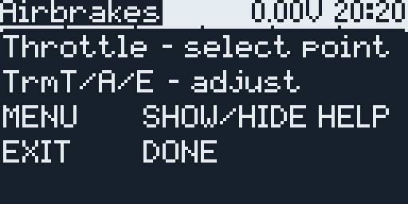
| Menu item | Page title | What it sets |
|---|---|---|
| 1. Channel configuration | Channel Config | channel order, direction, center and endpoints |
| 2. Align flaps & ailerons | Alignment | aligning the ailerons and flaps |
| 3. Adjust airbrake curves | Airbrakes | airbrake (crow) curves for the flaps, the ailerons and the elevator compensation |
| 4. Aileron and camber | Aile & camber | aileron travel, aileron to flap, camber to aileron |
| 5. Adjust other mixes | Adjust mixes | aileron to rudder, aileron differential, brake to elevator, snapflap |
| 6. Battery warning | Bat Warning | receiver battery warning level |
| 7. Motor idle | Motor idle | motor power at the lowest P1 position |
| 8. Switches | Switches | the switches of the template's functions (6.11) |
| Key | In the Configuration menu and on its pages |
|---|---|
| Roller (turn) | select a menu item or a field, change a value; the help calls it ROT |
| ENTER (press the roller) | open a page, start or finish editing |
| RTN | leave a page or a field; the help calls it EXIT |
| MDL (short press) | show or hide the help of the page; the help calls it MENU |
| PAGE> / PAGE< | switch between the timer and the Configuration screens |
On the timer screen the roller, ENTER and RTN have their own roles (section 7).
The Pocket and GX12 templates differ only in these switches. The 8. Switches page moves the functions to other switches (6.11).
| Function | GX12 | |
|---|---|---|
| Arm the motor | SA button: press to arm, press again to disarm | SA↓ |
| Start and stop the motor | SG button: press and release | SE (spring-loaded): pull and release |
| Flight mode Speed / Cruise / Float | SF↑ / middle / SF↓ | SC↑ / middle / SC↓ |
| Crow on the throttle stick and landing | SD button, while held | SD↓ |
| Crow off | SD released | SD↑ |
| Flight time callout every 10 s | SC↓ | SB↓ |
| Start height callout after the motor run | disarmed, which happens by itself when the motor stops | SA↑ |
| Motor power | P1 | P1 |
Open the Configuration screen (PAGE> from the timer), select a page with the roller and press ENTER; RTN returns to the menu. Do the steps in order. The motor is disconnected (except in step 6.9), and the model is held securely.
The page first warns: “Disconnect the motor!”. Press ENTER only after the motor is disconnected. Each row shows the channel number, the name, the direction (> or <) and a bar with three marks (lower end, center, upper end) and a marker for the current position.
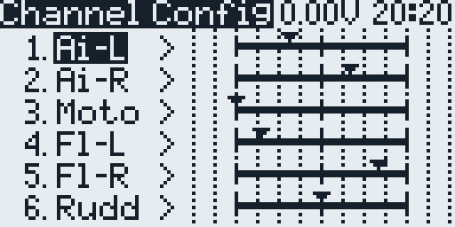
| Action | Correct response |
|---|---|
| Elevator stick back | both elevator halves up |
| Rudder stick right | rudder right |
| Aileron stick right | right aileron up, left aileron down |
For an M-tail, first make both elevator halves move together: reverse Ele-L or Ele-R if needed. Then adjust the center and the ends: at neutral the halves should be level, with equal travel up and down.
Aligns the four wing surfaces: LA and RA (ailerons), LF and RF (flaps). The changes are written to the curves CV1–CV4 and to the channel centers and endpoints.
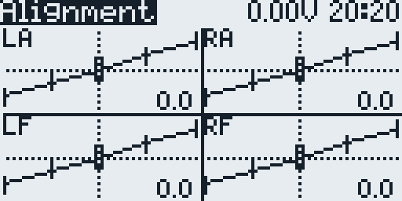
Three plots: Flap (curve BrF), Aile (BrA) and Elev (BrE). The left end of each plot is full brakes, the right end brakes off.
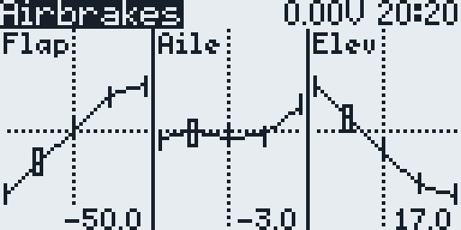
BkE on page 5, and the Elev curve shapes it along the brake travel: at −100 there is none, at 0 it equals BkE, and at +100 it is twice as much. The last point stays at −100, so in normal flight the elevator stays where the trim puts it.While the page is open, the trims change three values instead of moving:
| Trim | Code | What it sets |
|---|---|---|
| Aileron | Ail | aileron travel |
| Rudder | AiF | aileron to flap: how much the flaps follow the ailerons |
| Elevator | CbA | camber to aileron: how much the ailerons follow the camber |
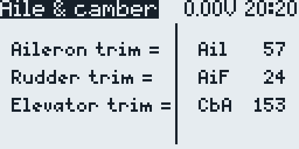
The values are shared by Cruise, Landing, Speed and Float. After you leave the page, the trims work as usual again.
In flight, camber comes from the throttle trim T3 (input CbP), and in Float also from the throttle stick. T3 is kept separately for Cruise and Float.
| Mode | Position of the flaps and ailerons |
|---|---|
| Speed (Pocket SC↑, GX12 SF↑) | No camber, and T3 does nothing: the surfaces sit at the neutral, the last points of the airbrake curves (6.3). |
| Cruise (SC or SF middle) | Only T3 gives camber: below center it adds camber, a little more with each click down; at center the camber is zero; above center T3 changes nothing. The template has T3 at center, so no camber. |
| Float (Pocket SC↓, GX12 SF↓) | Thermal camber from the throttle stick plus T3. Stick at the bottom: no thermal camber; at the top: full (32 in the template); in between: in proportion. T3 adds camber as in Cruise; the template has it at center. |
In camber the ailerons follow the flaps by CbA. The template has 153 %, so in thermal mode the ailerons drop more than the flaps. If that is too much, lower CbA.
CambrX mix of CH25 (Camb) and is not on the page. To change it, give that line in the mixes menu another Weight and the same Offset with a minus sign, for example 40 and −40.Setting the camber (motor disconnected):
CbA: up makes the ailerons drop more, down less; the flaps do not move.Reflex for Speed. In Speed the surfaces sit at the neutral, the last points of the airbrake curves, so reflex is set on page 3 (6.3), with the motor disconnected:
| Trim | Code | What it sets |
|---|---|---|
| Rudder | AiR | aileron to rudder |
| Aileron | Dif | aileron differential |
| Elevator | BkE | elevator compensation for the airbrakes (step 6.3) |
| Throttle | Snp | snapflap: the flaps and ailerons follow the elevator stick |
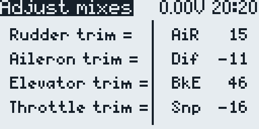
As on page 4, the trims change the values instead of moving, and the values are shared by Cruise, Landing, Speed and Float. The Motor flight mode keeps its own BkE: there it is the elevator compensation for the motor, set with the elevator trim while the motor runs.
The M-tail template has two mixes that move the elevator halves in opposite directions, so the elevator helps the roll. Both are off in the template.
| Mix (lines in CH7 and CH8) | Logical switch | In the template |
|---|---|---|
AilEle: aileron to the elevator halves | L46 | +20 on CH7, −20 on CH8, differential −50 |
RudEle: rudder to the elevator halves | L48 | +20 on CH7, −20 on CH8 |
L46 or L48.ON or off.AilEle and RudEle lines of CH7 and CH8 in MDL → MIXES, and keep opposite signs on CH7 and CH8.AilEle mix on: each elevator half works like the aileron on its side.AilEle lines: −20 on CH7 and +20 on CH8.RudEle with the same signs moves the halves with the rudder stick right the same way as the aileron stick right does. If you swapped the AilEle signs, swap the RudEle signs too.Battery level shows the receiver voltage that the warning uses: the first sensor found of Cels, RxBt, A1 and A2. Turn the roller to set the Warning level in steps of 0.1 V (1.0 to 40.0 V; the template has 6.9 V) for your receiver battery. ENTER or RTN closes the page.
Below the level the radio warns about the low battery and says the voltage, at most once every 20 seconds. While the motor runs and for 3 seconds after, the level is 10 % lower.
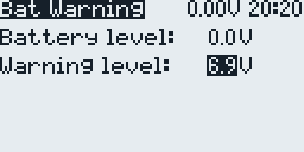
The idle here is the motor power at the lowest P1 position. Set it by ear with the motor running. This is the only step with the motor connected and the propeller on: hold the model and do not stand in front of the propeller.
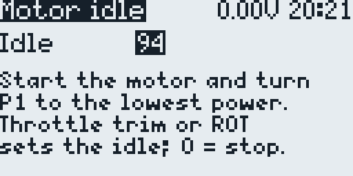
Pot curve. The page scales the middle point with it, so the P1 range keeps its shape.L49 and SF39) the throttle trim works as usual; use the roller.In the template, P1 sets the motor power, and the throttle stick has two jobs: the thermal camber in Float and the brakes while crow is on. The stick up gives full thermal camber and full brakes. Each of these can be turned around in the model's inputs (MDL → INPUTS) and mixes (MIXES), and the camber can move from the stick or T3 to a pot or slider. Check each change with the motor disconnected: the surfaces show the brakes and the camber, and the 3. Moto row on page 1 shows the motor power (6.8).
| What you want | Where | Change |
|---|---|---|
| The lowest power at the other end of P1 | input I4:Mot, line On | curve Mot → !Mot |
| Full brakes and full thermal camber with the stick down | input I5:Brk | weight −100 → +100 |
| Only the thermal camber with the stick down | CH25 mixes, line CambrX | curve LSl → !LSl |
!Mot is the same curve inverted, so P1 keeps its range and only its ends swap. Keep the weight −100 and do not change the Off line. Do not set the weight to +100 instead: full power then comes as a jump in the last 5 % of the P1 travel, and the lowest power is only at the very end. In 6.9, turn P1 to its new lowest-power end.I5:Brk, so its weight turns both around at once. The stick up then gives neither, and the top 5 % of the travel keep the brakes fully in, as the bottom 5 % did before. Nothing else needs changing: the brake curves follow the brake channel, with crow off (Pocket SD↑, GX12 SD released) the brakes stay in, and the brakes-in zone of the throttle crow (6.11) moves to the top with the brakes-in end.I8:Adj as it is: it selects the points on the setup pages (6.2, 6.3), and they keep the stick directions given in this guide. If you want them to follow the new direction too, set the weight of I8:Adj to +100 as well; then read the stick positions in 6.3 and 6.4 the other way round: the last point (brakes off) is then the stick up.Camber on a slider. On the GX12, the free S1 or S2 slider or P2 can do this (section 5). If the control is missing from the source list, enable it in the radio's hardware settings (SYS → HARDWARE). There are two ways:
I7:Cmb. The template keeps it for a slider; its source MAX gives no camber. Set the source to the slider: its +100 end (the last 5 % of the travel) gives no camber, the −100 end gives 20, on the same scale as the thermal camber (32 in the template). T3 works as before and adds to it. This camber works in every flight mode and stays while the motor runs, so in the CH25 mixes open the Slider line and untick FM1–FM4 (Adjust, Motor, Landing, Speed) in its flight modes: the slider then works only in Cruise and Float. Untick them in the mix line, not in the input: a switched-off input does not bring this camber to zero.I6:CbP. Change its source from T3 to the slider. The slider then works like T3: below center it adds camber, at center and above it adds none. One slider position serves all modes, so Cruise and Float no longer keep their own camber. To keep Speed without camber, open the first line in the CH23 mixes (source I6:CbP) and untick FM1, FM3 and FM4 (Adjust, Landing, Speed) in its flight modes. As with T3, full motor power takes this camber away. T3 no longer moves the camber in flight, and the setup pages still use its buttons.Float camber on a pot or slider. In Float the thermal camber of the throttle stick comes from the CambrX line in the CH25 mixes. To move it to a pot or slider, open that line and change its source from I5:Brk to the control; keep the weight, the offset and the curve. The control's +100 end then gives no camber and the −100 end the full 32; if it is the wrong way round, change the curve to !LSl. The throttle stick then moves only the brakes. On the GX12, P2, S1 or S2 is free for this; on other radios, any free pot or slider. The Pocket has no free control (P1 sets the motor power): there, untick FM5 (Float) in the flight modes of the CambrX line to take the camber off the stick; the throttle trim still adds camber in Float. Do one of the two when Crow off is NONE (6.11): the stick then moves the brakes all the time, and in Float it would add the camber with them.
The page moves the template's functions to other switches. Each row is one function, with the switch it uses now on the right. Select a row with the roller and press ENTER: the switch blinks. Turn the roller to choose another one, then press ENTER to save it or RTN to keep the old one.
The list starts with NONE (the function stays off) and ON (always on). Then come the positions with “!”, which means not: !SB↓ is on whenever SB is not down, so on a three-position switch it is up or middle. After them come the switch positions, on the GX12 also the SW1–SW6 buttons. It wraps around: one step back from NONE is the last entry. The page sets the first switch of a logical switch (see the table) and stores NONE there as !ON.
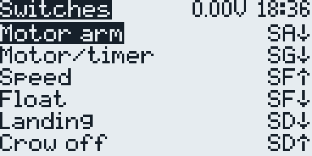
| Row | What it does | Logical switch | GX12 | |
|---|---|---|---|---|
| Motor arm | arms the motor | L41 (GX12), L5 (Pocket) | SA↓ | SA↓ |
| Motor/timer | starts and stops the motor | L9 | SG↓ | SE↓ |
| Speed | flight mode Speed | L3 | SF↑ | SC↑ |
| Float | flight mode Float; with neither of the two, Cruise | L4 | SF↓ | SC↓ |
| Landing | ends the flight once the 10-second count is over | L7 | SD↓ | SD↓ |
| Crow off | keeps the brakes in; otherwise the throttle stick moves them | L36 | SD↑ | SD↑ |
| Ail->Ele | the AilEle mix (6.6) | L46 | NONE | NONE |
| Rud->Ele | the RudEle mix (6.6) | L48 | NONE | NONE |
| Timer report | flight time callout every 10 s | L12 | SC↓ | SB↓ |
Landing at NONE. No switch ends the flight. Press the start button instead (GX12 SG, Pocket SE), as in the original SoarOTX F5J: once the 10-second count after the motor run is over, the flight timer stops and the radio says the flight time. Before that the press does nothing. It does not start the motor either: that needs a new arm.
Crow off at NONE. The throttle stick moves the brakes all the time, as in the original SoarOTX F5J. When the motor starts, the brakes lock in, so the stick position does not matter during the motor run. After the motor stops, they stay in until you move the stick to its brakes-in end, the last 5 % of the travel (the bottom in the template, the top after the change in 6.10); from there the stick moves the brakes again. While the brakes are locked and the stick is elsewhere, the radio says “Flaps up” 3 seconds after the motor stops and then every 5 seconds. In Float the stick would add the thermal camber together with the brakes, so move that camber to a pot or slider, or take it off the stick (6.10).
L50) has no lock and no reminder: with Crow off at NONE the stick just moves the brakes all the time. Restore the model from the new template to get them.Landing and Crow off both at NONE. Only with this pair of settings does the page also turn on L52. The throttle stick then switches the flight mode FM3 Landing, which takes over from Cruise, Speed and Float:
L35), L53 (L52 and not L35) turns Landing on, and the radio says “landing”. When the stick returns to that end, Landing goes off at once.BkE, the elevator compensation for the airbrakes (6.5), and the elevator trim itself does not move.L52 stays off and Landing never comes on, as before. A model made from an older template (without L52) has no Landing flight mode: restore the model from the new template to get it.Screen 1 shows the flight mode at the top left, the landing points (Landing), the start height (Start), the working time and the motor time (Mot). The working time is Tgt before the flight, Rem (remaining) in the flight and Flt (flown) after the landing.
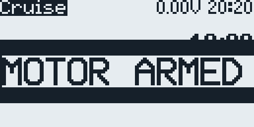
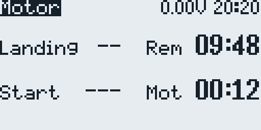
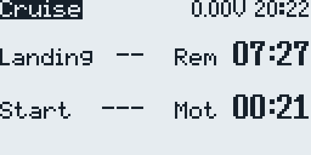
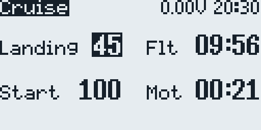
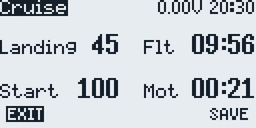
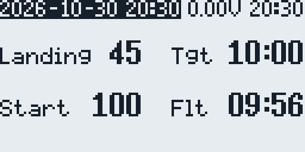
/LOGS/JF F5J Scores.csv, RTN discards it. The screen returns to Ready.| What you see | What to do |
|---|---|
| The model has no timer or Configuration screen | The model was made with Create model and is empty. Restore it from the template (section 3). |
| The menu has no 7. Motor idle or 8. Switches, or the screens do not open after an update | Delete the old .luac files (section 2) and restart the radio. |
| Alignment opens with “did not pass all checks” | A wing curve or output was changed outside this page, so the page cannot align it. ENTER resets the four outputs and the curves CV1–CV4; then align the wing again (step 6.2). RTN leaves them as they are. |
| T3 above center does nothing, no reflex | That is by design: T3 only adds camber. Reflex is the last points of the airbrake curves on page 3 (6.4). |
| After the motor run the brakes stay in and the radio says “Flaps up” | Crow off is at NONE (6.11): move the throttle stick to its brakes-in end, and the stick moves the brakes again. |
| No camber in Float | In Float the thermal camber comes from the throttle stick: at the bottom there is none. Raise the stick or lower T3 (6.4). |
| The help covers the page, or does not show | Press MDL: it shows or hides the help. |
| The motor does not start | Arm first. After a motor run, press SA again on the GX12, or move the Pocket's SA out of the down position and back. The motor does not start while the Alignment or Airbrakes page is open. |
| Elev shows N/A, or the throttle trim does not change the idle | The model was made from an older template, without BrE, L49 and SF39. Use the roller for the idle, or restore the model from the new template. |
| The right flap (CH5) sits at an end, or CH6–CH8 move in steps | Update the module and the receiver to ExpressLRS 4 and set Packet Rate to “100Hz Full” and Switch Mode to “8ch” (section 3). Do not move channels. |
| The ExpressLRS script will not change a setting | The model is armed: set Arm using to “Switch” and the Switch line to “---” while you change settings, then back to “ON”. Switch Mode changes only while the receiver is off (section 3). |
| The start height is always 100 | There is no Alt sensor: discover the sensors on the model's TELEMETRY page. |
| No voice prompts for the flight modes | Copy SOUNDS/en/*.wav to /SOUNDS/en, and to the folder of your voice language (section 2). |
AilEle and RudEle mixes are off, or on with small values in the right direction.The project page is github.com/vitas/soar-edgetx-bw; its README describes the templates in detail. This guide describes the templates and scripts as of November 2026.